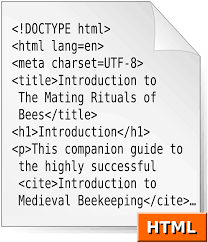
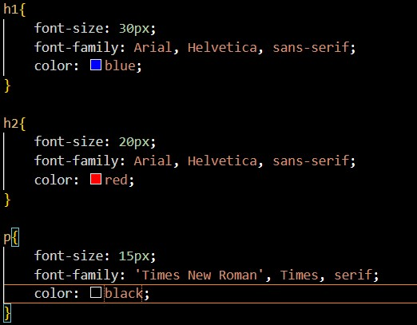
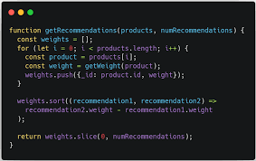
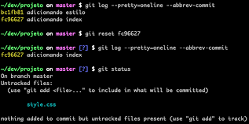

HTML (Hypertext Markup Language): É a linguagem básica para criar e estruturar o conteúdo de um site. Comandos HTML definem elementos como títulos, parágrafos, listas, links e imagens. Exemplos de tags HTML incluem h1, p, a, e img.
CSS (Cascading Style Sheets): Usado para estilizar e layoutizar a aparência dos elementos HTML. Comandos CSS permitem alterar cores, fontes, tamanhos e posicionamento. Exemplos de comandos CSS são: color, font-size, margin, e padding.
JavaScript: Linguagem de programação que permite adicionar interatividade ao site, como animações e respostas a eventos de usuário. Comandos JavaScript incluem funções, loops e eventos. Exemplos são document.getElementById(), addEventListener(), e console.log().
FTP (File Transfer Protocol): Usado para transferir arquivos do seu computador para o servidor onde o site será hospedado. Comandos típicos em um cliente FTP incluem upload, download, delete, e rename.

CMS (Content Management System): Sistemas como WordPress ou Joomla permitem criar e gerenciar o conteúdo do site sem precisar codificar. Comandos são geralmente opções na interface gráfica do CMS.
Git: Sistema de controle de versão usado para rastrear mudanças no código e colaborar com outros desenvolvedores. Comandos Git comuns são git init, git add, git commit, e git push.
HTTP/HTTPS: Protocolos usados para a comunicação entre o cliente (navegador) e o servidor web. Comandos não são diretamente usados, mas você pode configurar respostas e requisições HTTP em servidores.